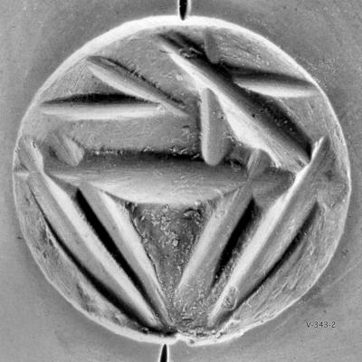
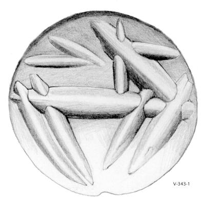

-
SAMWe4
Names
SAMWe4, SAWe4, SAMWe4
Support
Tablet
Location
Samothrace
Findspot
Unavailable


Scribe
Unavailable
Context
Not Available
Dimensions
Catalogue
Hiraklion Museum
Readings
1 1 0 *800 none
𐝠
*800
𐝠
*800
SAM We 4
(formerly SA We 2; CMS V Suppl. 3, no. 343),
nodulus
pierced for suspension (no stringhole).
a. impression of a cushion seal: in the center, vertical hatching,
flanked by a star? and line at left and by a S-shape at right (cf. CMS V
479 from Kea)
b. A+TE (or A609=A302+A, or A+A303)
SELAKANOS
Commentary © John Younger
References